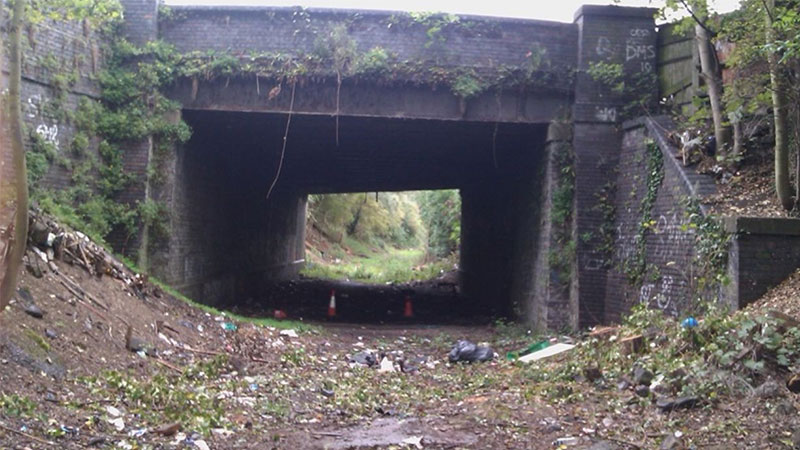
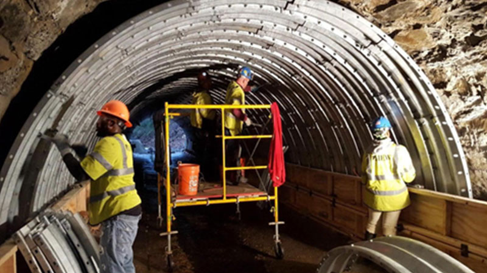
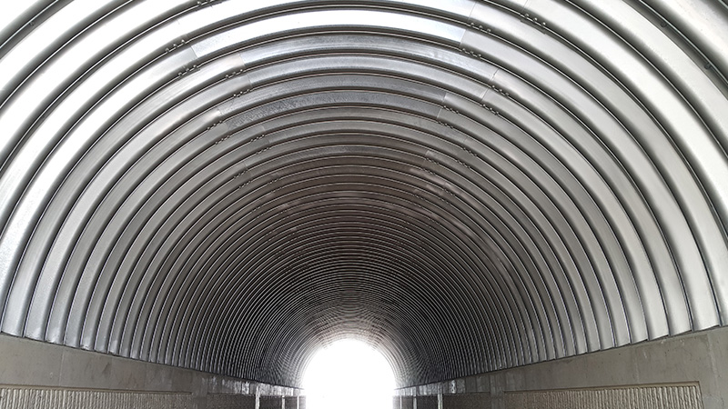
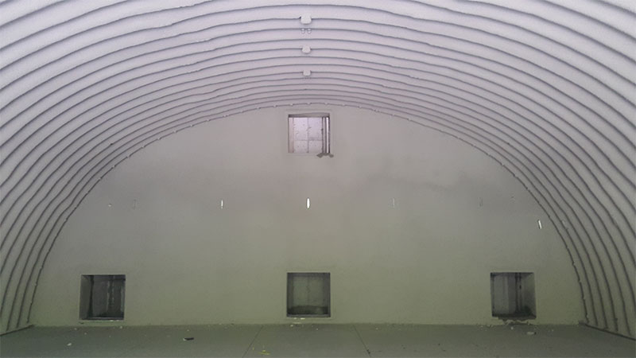

01 / STRUCTURE
تحمّل الأحمال بالتكامل مع التربة
الاستفادة من تفاعل الفولاذ مع التربة المحيطة.

منشآت الفولاذ المموج للعبارات ومعابر الحياة الفطرية والجسور والتعدين.
تُشكّل ألواح الفولاذ بتموجات لتعمل كمادة إنشائية. تحمل أحمال المنشآت المدفونة عبر التفاعل مع التربة المحيطة.
الاستفادة من تفاعل الفولاذ مع التربة المحيطة.

أقواس ومقاطع دائرية وأشكال أخرى تتوافق مع الموقع والاستخدام.

للعبارات ومعابر الحياة الفطرية والجسور والتعدين والمنشآت الوقائية.
من الإصلاح والتدعيم إلى عبارات التصريف والتعدين ومستودعات الذخيرة ومعابر الحياة الفطرية والجسور. صور التطبيقات في صفحة واحدة.
تُجمع بطانات الفولاذ المموج داخل الممرات والعبارات والجسور الصغيرة المتقادمة لتدعيمها. تُراجع حالة المنشأ والفتحة الهيدروليكية المتبقية والملء والحقن وتسلسل التنفيذ معاً.






مشاريع تصريف تعبر الطرق وتربط المجاري المائية، توضح الأقواس والأساسات والمداخل والمخارج والردم.



من المشهد العام لمنشآت التعدين إلى رفع الأقواس والتجميع في الموقع والردم.
طلب من GS · نيومان، أستراليا الغربية


مشاريع مستودعات ذخيرة مقوسة توضح التجميع والشكل بعد الردم والفراغ الداخلي. تُحجب هوية المنشآت ويُطبق تصميم ومواصفات كل منشأة.



تطبيقات فعلية لمعابر وأنفاق الحياة الفطرية توضح ارتباطها بالتضاريس والطرق والممرات.


جسور صغيرة ومنشآت مرور أسفل الطرق تعرض أشكالاً وترتيبات تجميع ملائمة للموقع.


مراجعة الشكل وشروط التصميم، ثم التحقق الإنشائي والرسومات ودعم الموقع.
أبعاد أساسية من تعريف منتجات REXSTEEL السابق. تُراجع المواصفات ونطاق التوريد وفق شروط كل مشروع.
| السماكة (t) | خطوة التموج (p) | عمق التموج (d) |
|---|---|---|
| 3.4~9.0mm | 381mm | 140mm |
تُراجع التربة والأحمال والتصريف وتسلسل التنفيذ معاً.

التحقق من الاستخدام والبحر والارتفاع والغطاء الترابي والأحمال وشروط التربة.

تصنيع الألواح وفق التصميم ومراجعة التجميع والوصلات الميدانية.

مراجعة الردم والدمك وضبط التشوه وفق خطة التنفيذ.
تواصل معنا بشأن المنتجات والتصميم ودعم التنفيذ.